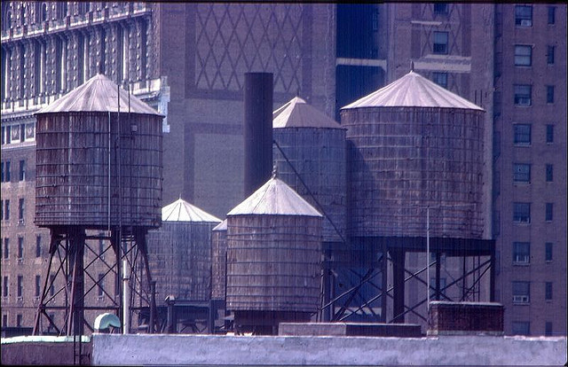

Manhattan rooftop water towers. These always baffled me a little. The idea is that if you have the water on the roof, you don’t have to pump it up to the apartments. But you have to pump the water up to the towers, and unless I’m forgetting my high school physics, that’s not really a savings of energy. But, hey, what the hell do I know?